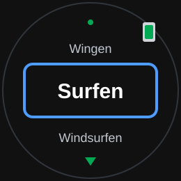
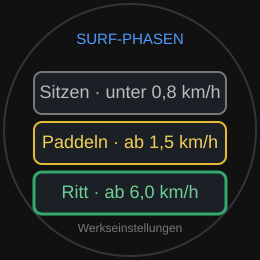
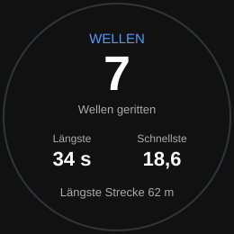
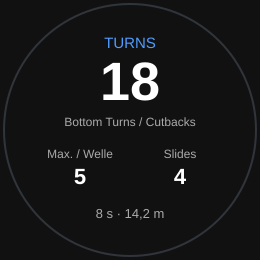

Select surfing as a separate sport.

Mode, defaults, pages and IQ fields.
User guide for surfing sessions on your Garmin watch
Guide revision V10 · Updated: 27 November 2026
Would you like to support development or request a particular feature? Sanitized FIT files from real sessions help improve sport specific functions and develop new features, such as detecting specific manoeuvres. Remove personal information first using the FIT Privacy Cleaner. The option to send me the sanitized FIT file directly will be added to the FIT Privacy Cleaner.
On the watch home screen, select Surfing. If the sport is not listed, enable it under Settings → Sports.
Check the surfing settings before starting. The surfing thresholds are independent and do not affect windsurfing or wing foiling.
SurfsApp records time, GPS track, speed and heart rate. Time spent sitting, paddling and riding is also recorded separately.

SurfsApp uses two speed thresholds to divide session time. The defaults are 2.5 km/h for paddling and 6.5 km/h for the start of a ride. You can adjust both values to suit your conditions.

| Speed | Classification | Description |
|---|---|---|
| Below 2.5 km/h | Sitting | Waiting, holding position or moving very slowly. |
| From 2.5 to below 6.5 km/h | Paddling | Movement below the configured riding speed. |
| From 6.5 km/h | Ride | Time is counted as ride time. |
Die Grenzwerte steuern die Zeitanteile. Die Wellenzählung ist eine zusätzliche Erkennung und kann deshalb von der reinen Rittzeit abweichen. Ein Abschnitt wird nicht allein deshalb als Wellenritt gezählt, weil die Geschwindigkeit kurz über der Rittgrenze liegt.
Während der Aufnahme blättern Sie mit HOCH und RUNTER beziehungsweise durch Wischen auf einer unterstützten Touch Uhr. Unter Surfen → Seiten können Sie jede der vier Surf Seiten ein oder ausschalten. Mindestens eine eigene oder feste Surf Seite sollte aktiv bleiben.




Die Wellenzahl auf der Uhr ist während der Session vorläufig. Die abschließende Auswertung kann einzelne Abschnitte anders bewerten. Das ist besonders bei GPS Empfang, langsamem Paddeln und wechselndem Tempo zu berücksichtigen.
Unter Surfen → Modus → Wellenritt wählen Sie, wie umfangreich die Wellenritt Erkennung arbeiten soll. Die Auswahl betrifft nur die Surf Sportart.
| Stellung | Was sie leistet | Wann sie sinnvoll ist |
|---|---|---|
| Connect | Erkennt und zählt Wellenritte. Die Uhr verwendet die eingestellte Rittgeschwindigkeit sowie die Turn Erkennung. Die wichtigsten Wellenwerte stehen auf der Uhr und in der Sessionauswertung zur Verfügung. | Für die normale Surf Aufzeichnung und eine Übersicht der Wellen. |
| Visu | Wie Connect, zusätzlich werden detailliertere Drehungsdaten erfasst. Diese Daten unterstützen die Bewegungserkennung während des Ritts. | Wenn Sie neben den Standardwerten auch zusätzliche Bewegungsdaten erfassen möchten. |
| Aus | Die Wellenritt Zählung auf der Uhr wird ausgeschaltet. GPS Strecke, Zeit, Tempo und Herzfrequenz werden weiterhin aufgezeichnet. Die Web App kann Abschnitte weiterhin anhand der GPS Daten auswerten. | Wenn Sie nur die grundlegende Session aufzeichnen möchten. |
Ein gezählter Wellenritt setzt einen ausreichend schnellen Abschnitt und mindestens eine erkannte Turn Bewegung voraus. Die dafür verwendeten Bewegungsgrenzen lassen sich unter Defaults einstellen.
Wichtig zur TURNS Seite: Die Detailstufe Visu ergänzt die Aufzeichnung um Drehungsdaten. Die separate TURNS Seite zeigt derzeit aber noch keine eigenständige Turn oder Slide Statistik. Die zusätzlichen Werte sollten deshalb nicht mit einer bereits verfügbaren vollständigen Turn Analyse verwechselt werden.
Öffnen Sie auf einer Uhr mit fünf Tasten die Einstellungen mit HOCH lang. Bei einer vívoactive 4 wählen Sie auf der Startseite den Eintrag Einstellungen. Danach wählen Sie Surfing.
| Bereich | Einstellung | Startwert | Wofür sie verwendet wird |
|---|---|---|---|
| Modus | Wellenritt | Connect | Legt die Detailstufe der Wellenritt Erkennung fest: Connect, Visu oder Aus. |
| Defaults | Gleitschwelle | 6,5 km/h | Ab dieser Geschwindigkeit zählt die Zeit als Rittzeit. |
| Defaults | Paddelschwelle | 2,5 km/h | Ab dieser Geschwindigkeit zählt die Zeit als Paddelzeit. Darunter zählt sie als Sitzzeit. |
| Defaults | Turn Rate | 25°/s | Legt fest, wie schnell die Drehbewegung mindestens sein muss, um als Turn Beginn erkannt zu werden. |
| Defaults | Turn Winkel | 45° | Legt fest, welcher Mindest Drehwinkel für einen erkannten Turn erreicht werden muss. |
| Seiten | Live, Wellen, Turns, Session | Alle an | Schaltet die festen Surf Seiten ein oder aus. |
| IQ Felder | Surf Kennzahlen | Auswahl | Legt fest, welche zusätzlichen Surf Werte in der Garmin Aktivität gespeichert werden. |
Die Startwerte sind ein sinnvoller Ausgangspunkt. Eine niedrigere Gleitschwelle erhöht die gezählte Rittzeit. Eine niedrigere Paddelschwelle ordnet mehr Zeit dem Paddeln statt dem Sitzen zu. Turn Rate und Turn Winkel beeinflussen die Erkennung von Drehbewegungen für die Wellenzählung.
Die Einstellungen für Windsurfen und Wingen bleiben davon unabhängig. Änderungen während einer laufenden Aufnahme können für die nächste Session vorgemerkt werden. Zeigt die Uhr Umschaltung bei neuer Session, gilt der neue Wert nicht rückwirkend.
Beim Surfen wird die Aufnahme manuell pausiert. Drücken Sie START/STOP, wählen Sie Pause und bestätigen Sie mit Yes. Zum Fortsetzen öffnen Sie das Aktionsmenü erneut und wählen Weiter.
Wartezeiten zwischen den Wellen bleiben Bestandteil der Session. So erhalten Sie eine vollständige Aufzeichnung vom Start bis zum Speichern. Die Surf Pause verwendet nicht die automatische Pause von Windsurfen oder Wingen.
Drücken Sie während der Aufnahme BACK, um einen Marker zu setzen, zum Beispiel nach einem besonders guten Ritt. Die Uhr bestätigt den Marker mit zwei kurzen Vibrationen. Marker können später in der Web App auf der Karte und in den Diagrammen wiedergefunden werden. In der Pause wird kein Marker gesetzt.
Öffnen Sie mit START/STOP das Aktionsmenü, wählen Sie Save und bestätigen Sie mit Yes. Die Aufnahme wird als Garmin Aktivität gesichert und kann mit Garmin Connect synchronisiert werden.
Nach dem Speichern zeigt SurfsApp die Session Zusammenfassung. Sie können die Seiten mit HOCH und RUNTER durchblättern. Über Letzte Session auf der Startseite lässt sich die letzte Auswertung erneut öffnen.
Öffnen Sie die SurfsApp Web App und wählen Sie Ihre Surf Session in der Sessionsliste aus. Die Web App bietet eine Karte mit GPS Strecke, Zahlen zu Zeit, Tempo und Strecke sowie Diagramme über den Verlauf. Erkannte Wellenabschnitte und die zugehörigen Werte werden in den Surf Ansichten dargestellt, sofern die Daten dafür vorhanden sind.
Beim Surfen werden die Fahrzustände als Sitzen, Paddeln und Ritt dargestellt. Windsurf Kennzahlen wie Halsen, Gleiten, Loops und Slides werden nicht auf die Surf Session übertragen. Auf schmalen Bildschirmen wechseln Sie über die unteren Reiter zwischen Sessions, Zahlen und Diagrammen.
Die Web App kann GPS, Geschwindigkeit, Zeit und Herzfrequenz auswerten. Zusätzliche Bewegungsdetails müssen während der Aufnahme mit dem passenden Modus erfasst werden. Nachträglich lassen sie sich nicht aus einer normalen GPS Spur rekonstruieren.
Beginnen Sie mit den Standardwerten. Vergleichen Sie nach mehreren Sessions die erkannte Rittzeit und Wellenzahl mit Ihrer Erinnerung. Ändern Sie jeweils nur einen Grenzwert, damit Sie die Wirkung beurteilen können.
| Beobachtung | Mögliche Anpassung |
|---|---|
| Die Rittzeit ist deutlich zu kurz. | Die Gleitschwelle vorsichtig verringern. |
| Zu viel Zeit wird als Ritt statt als Paddeln gezählt. | Die Gleitschwelle etwas erhöhen. |
| Zu viel Zeit wird als Paddeln statt als Sitzen gezählt. | Die Paddelschwelle leicht verringern. |
| Zu wenig Zeit wird als Paddeln gezählt. | Die Paddelschwelle leicht erhöhen. |
| Wellenabschnitte werden nicht als Wellenritt gezählt. | Prüfen Sie Gleitschwelle, Turn Rate und Turn Winkel. Ändern Sie nur einen Wert nach dem anderen. |
| Es werden zu viele Wellenritte gezählt. | Prüfen Sie zuerst, ob die Gleitschwelle zu niedrig ist. Erhöhen Sie bei Bedarf Turn Rate oder Turn Winkel. |
GPS Geschwindigkeit ist eine Messgröße und keine direkte Messung der Wellenbewegung. Kurze GPS Aussetzer, sehr langsames Paddeln und wechselnde Bedingungen können die Einordnung beeinflussen. Nutzen Sie die Einstellungen deshalb als Abstimmung für Ihre üblichen Bedingungen, nicht als universelle Grenze für jeden Spot.
Zur SurfsApp Startseite · Allgemeine Bedienungsanleitung · Wingen Anleitung